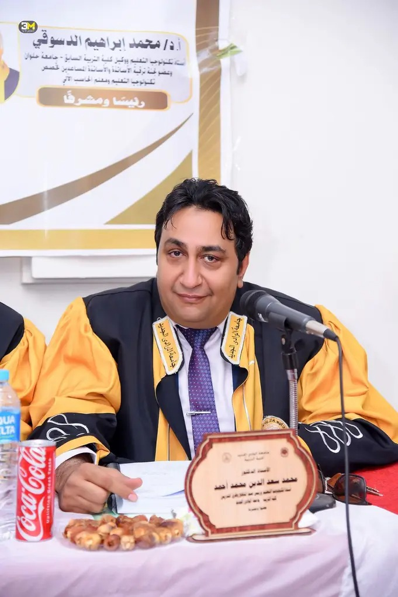
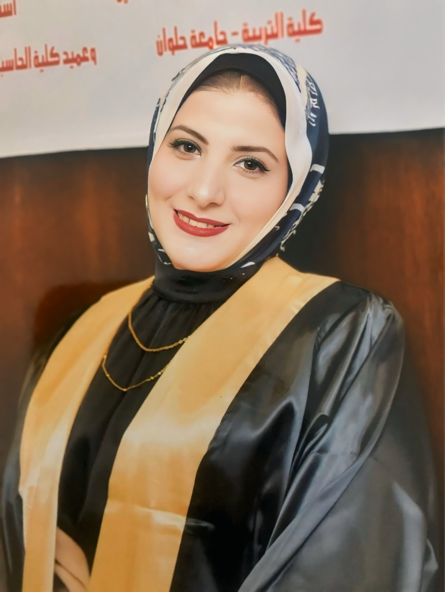

👤 إعداد الباحثة
سحر سيد أبورحاب
باحثة ماجستير تخصص تكنولوجيا التعليم
جامعة الوادي الجديد - كلية التربية🎓 لجنة الإشراف العلمي

أ.د/ محمد سعد الدين محمد
أستاذ تكنولوجيا التعليم و رئيس قسم المناهج وطرق التدريس
كلية التربية - جامعة الوادي الجديد
د/سلوى حسن السيد حسن
مدرس بقسم المناهج وطرق التدريس (تخصص تكنولوجيا التعليم)
كلية التربية - جامعة الوادي الجديد